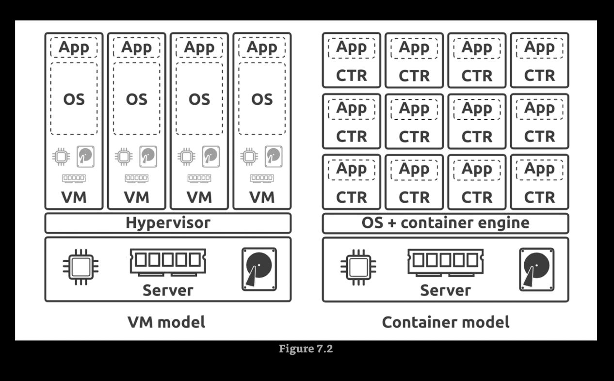
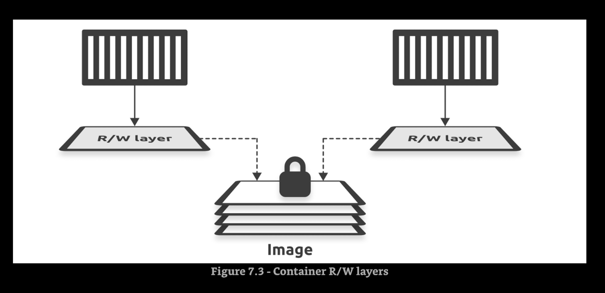

Working with containers¶
- To install nano inside gcc:latest docker container
apt-get update && apt-get install nano -y
VMs vs Containers¶

Images and containers¶
- You can start multiple containers from a single image. Images are read-only, but every container has a read-write layer.

Pulling image and start container¶
docker pull nginx:latest
docker run -it -d --name dashboard --publish 80:80 nginx:latest
docker exec -it dashboard sh
cd /usr/share/nginx/html
How containers start apps¶
There are three ways you can tell Docker how to start an app in a container:
- An
Entrypointinstruction in the image - A
cmdinstruction in the image - A
cliargument
Connecting to a running container¶
- Interactive
- Remote execution
Self-healing container with restart policies¶
- no (default)
- on-failure
- always
- unless-stopped
Docker commands¶
docker build -t demoapp:latest .docker run --detach --name test --restart no demoapp:latestdocker run -d --name macorina --publish 8000:8000 demoapp:latestdocker exec -it macorina shdocker pull python:latestdocker run -it -d --name macarena python:latestdocker exec -u root -it macarena shdocker run -it --detach --name bang --publish 8000:8000 --env-file .env fastapi:latestdocker inspect nginx:latest | grep Entrypoint -A 3docker run --rm --detach alpine sleep 60docker exec -it macarena shdocker exec macarena psdocker inspect macarenadocker inspect <CONTAINER_NAME>docker inspect <IMAGE_NAME>docker stop macarenadocker restart macarenadocker rm macarena -fdocker run --name neversaydie -it --restart always alpine shdocker rm ${docker ps -aq) -fdocker rmi $(docker images -q)